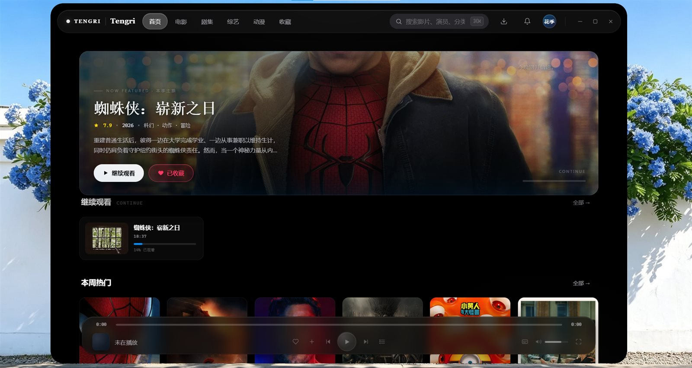
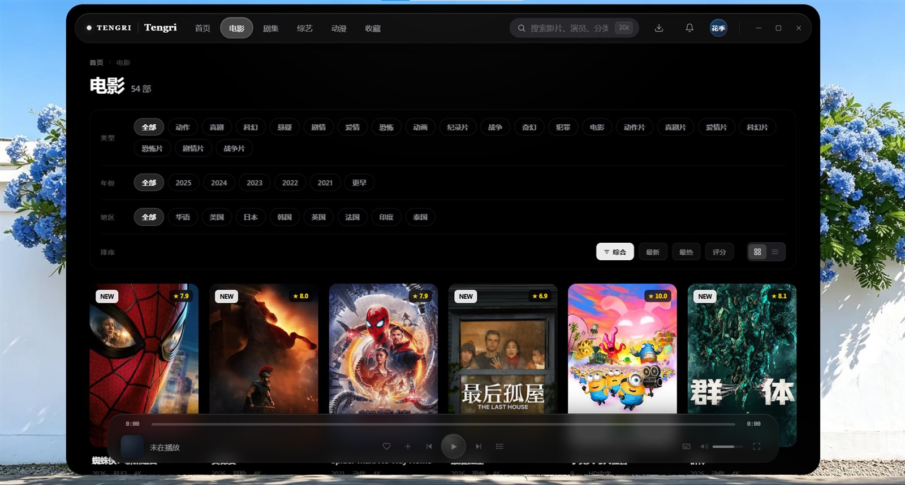
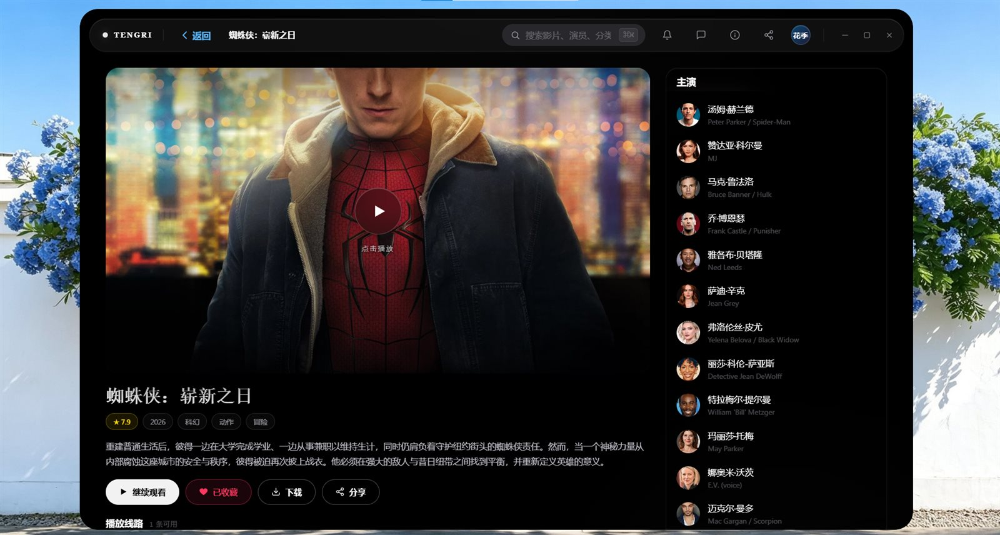
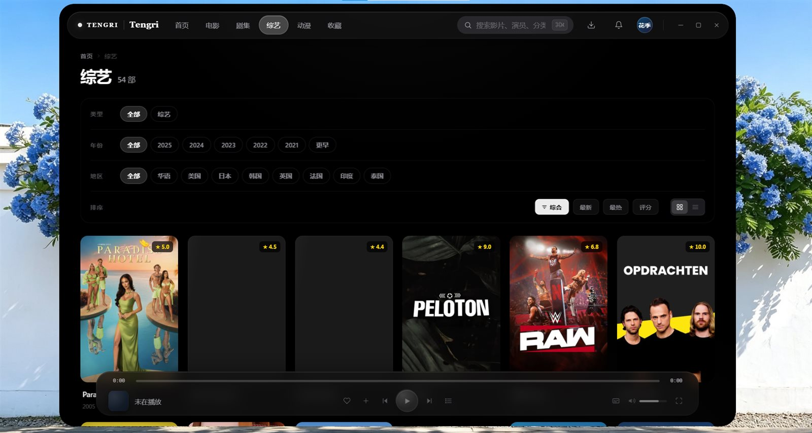
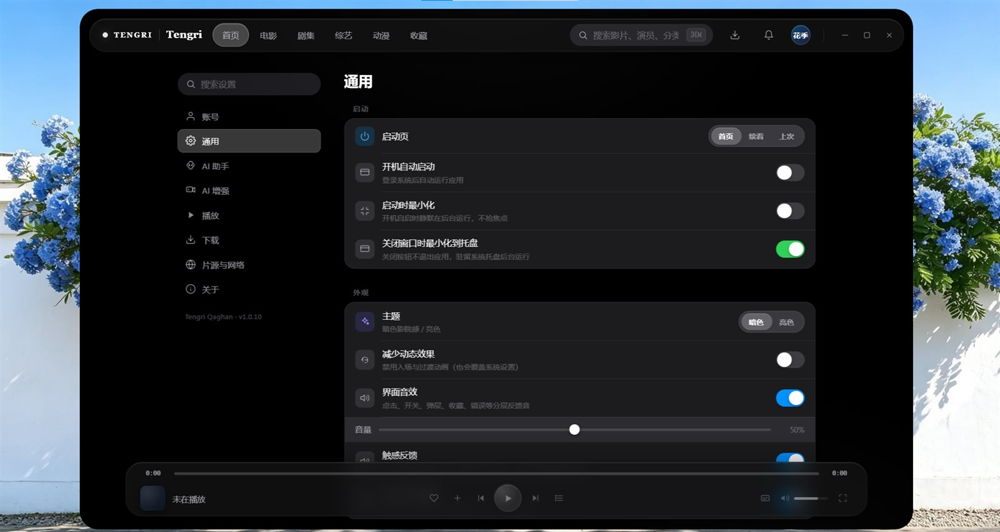

你自己的影视，
用一个播放器管好
腾格里汗是一款私人影视播放器，不是视频网站。 它把你电脑里的视频、网盘、家庭媒体库和直播电视，放进一个像商业 App 一样好用的界面里—— 不注册、不充值、不收集你的数据。
不带任何影片
不内置影视和频道，播什么由你接的源决定。
不用注册登录
打开即用，没有账号体系，不收集个人信息。
数据只在你电脑
账号密码加密存在本机，不上传任何服务器。





第一次用，照做就行
它就像一台新电视，需要先接上「信号」才有画面。下面用一个完全免费、公开合法的直播源做演示， 30 秒就能看到第一个画面。
下载并安装
从本页下载 Windows 安装包，双击安装。如果系统弹出蓝色保护提示，点「更多信息 → 仍要运行」即可（原因见下方安全说明）。
添加一个片源
打开应用 →「设置 → 片源」→ 点「添加 iptv-org 直播」，地址已自动填好，直接保存。
https://iptv-org.github.io/iptv/index.m3u回首页观看
回到首页，几秒后出现「直播」分区，点频道即可观看。还能看到节目时间表和「正在播出」。
想看你自己的网盘、家庭媒体库或 IPTV 账号？看 📖 新手指南 里的手把手教程。
像商业 App 一样好用，但内容是你的
一个界面看所有
电影、剧集、动漫、直播，全部汇聚到同一个首页，跨片源一次搜索，自动记住看到哪、下次续播。
直播电视 + 节目单
支持 M3U 和 Xtream 直播源，显示「正在播出」、播放进度和今明两天节目时间表，像用电视一样选台。
下载到本地看
把视频下到电脑，没网也能看；不小心删了本地文件，会自动回到在线片源、从上次位置续播。
字幕和弹幕
支持 SRT / VTT / ASS 外挂字幕，本地字幕自动匹配；内置高性能弹幕，看番看剧更有氛围。
自动海报墙
通过免费的 TMDB 资料库自动匹配海报、剧情、评分和演员，网盘里的裸文件名也能变成精美海报墙。
私密优先
账号密码用系统级加密保存在本机，不分析、不追踪、不上传观看记录，你接的源只有你知道。
把你已有的内容接进来
不知道这些是什么？没关系，点这里按你的情况对号入座。
它会不会偷我数据、带病毒？
常年下软件中过招的人，最该关心这个。我们把话说在前面：
不收集任何个人数据
没有注册账号，不读取你的通讯录、文件，不追踪你看了什么，数据只存你本机。
密码加密保存
你填入的网盘/媒体库账号密码，用 Windows 系统加密（DPAPI）存本地，配置文件里不是明文。
没有广告和捆绑
安装包不含捆绑软件、不弹广告、不后台偷偷装东西，免费供个人非商业使用。
不内置任何片源
应用本身不带影视内容，你接什么就看什么，内容来源由你自己选择和负责。
⚠️ 安装时 Windows 弹「已保护你的电脑」怎么办？
这是因为作为免费的个人项目，我们暂时没有购买昂贵的代码签名证书， Windows 对不认识的新软件会保守提醒，这不代表它有病毒。 在蓝色窗口里点击 「更多信息」，就会出现 「仍要运行」 按钮，点击即可继续安装。 请始终从本页的官方下载链接获取安装包，不要从第三方网站下载，以免被人二次打包植入恶意程序。
你可能还想问
为什么我打开后是空白的，没有任何电影？
这是正常的。腾格里汗不自带内容，需要你先接入一个片源。最省事的方式是在「设置 → 片源」里添加公开的 iptv-org 直播源，立刻就能看电视。完整教程看 新手指南。
它能看爱奇艺、腾讯视频、B 站吗？
不能。它不破解、不抓取任何商业视频网站。它播放的是你自己拥有或有权访问的内容：电脑里的视频、你的网盘、你自建的 Jellyfin/Plex、你订阅的 IPTV 等。
收费吗？有广告或会员吗？
完全免费，供个人非商业使用，没有内购、没有广告、没有会员。
支持 Mac 和手机吗？
目前提供 Windows 10 / 11 版本。macOS 和 Linux 版本在计划中；手机/平板端暂无计划。
应用是开源的吗？
这是一个免费但闭源的个人非商业项目，源码暂不公开。你的安全来自数据本地化和不收集隐私，而不是开源审计。更多说明见 安全与隐私。
看不了、播放不出来怎么办？
去「设置 → 片源」看每个源旁边的健康圆点：绿色正常、红色表示该源当前连不上（通常是源本身或网络问题，不是应用故障）。更多排障见 常见问题。
准备好开始了吗？
免费下载，Windows 10 / 11 已就绪。遇到安装提示请看上方的安全说明。
免费下载最新 Windows 版